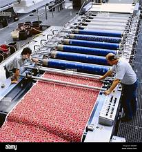

Weave History into Fabrics
Textile crafting is a rich cultural tradition, and our workshop immerses you in the techniques passed down through generations. You'll learn:
- The basics of loom weaving and traditional embroidery techniques.
- The cultural significance of textiles in different regions.
- Hands-on crafting with expert guidance.
Whether you're weaving or embroidering, you'll create something unique and meaningful while gaining a new appreciation for this ancient craft.
